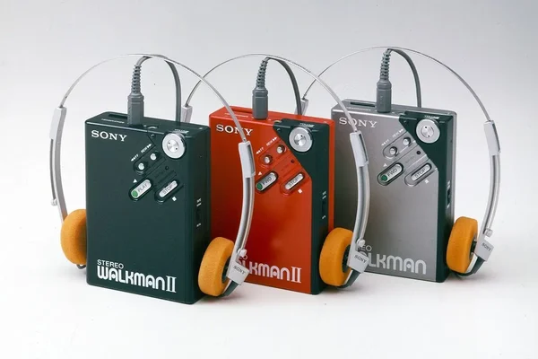
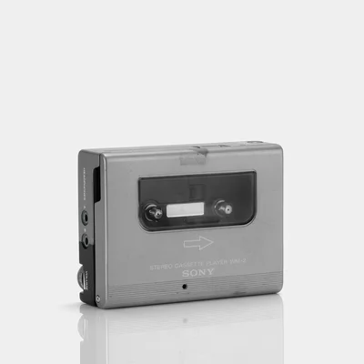

Walkman 2
$350.00
The first-generation Walkman® design was a step forward in the evolution of tape recorders. The WM-2 takes this design a step further with a casual flair, just right for enjoying music on the go. It set a new standard while remaining faithful to the original concept. The direct drive mechanism enabled the designer to arrange control buttons on the front surface, and it became a hallmark of the Walkman® product identity.

